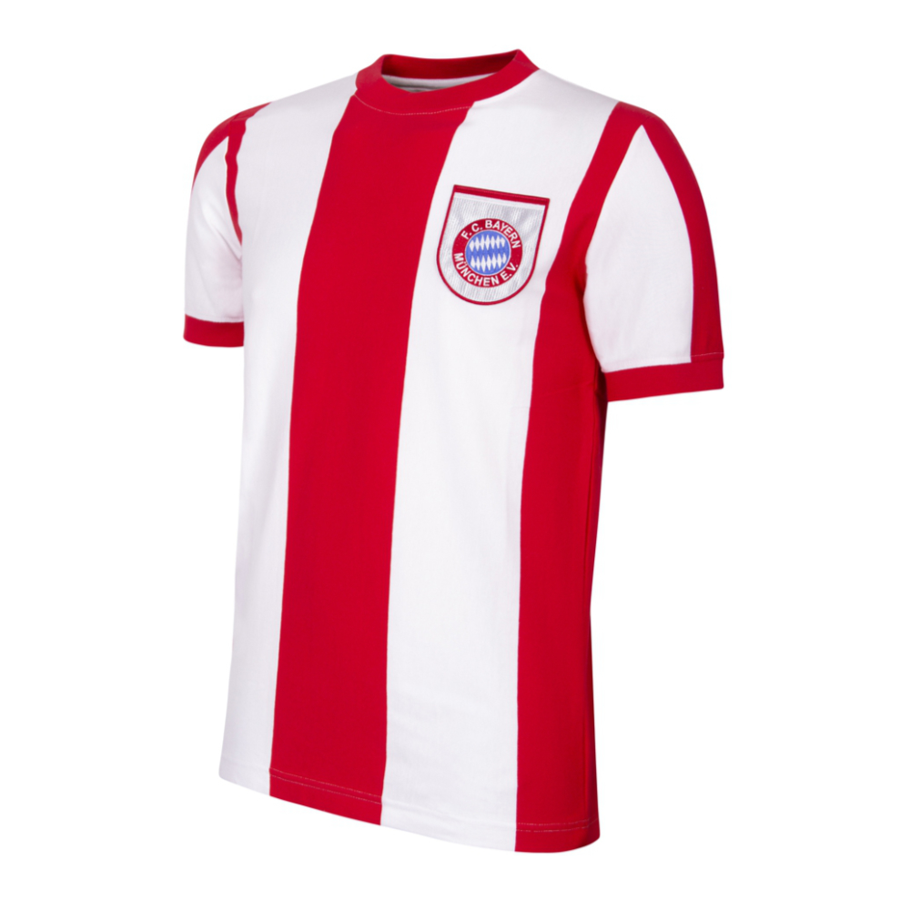

Talla:
Reservar por WhatsApp →Select your language · Elige tu idioma
Choisissez votre langue · Sprache wählen
Camisetas de fútbol y denim vintage originales, verificados pieza por pieza. Cuando un lote se agota, no se repone jamás. No es una promesa de marketing: es la única regla del negocio.

No vendemos ropa. Vendemos el minuto exacto en que decidiste no dejarla pasar.
Cada pieza que entra al catálogo pasa por un proceso de curaduría manual: origen verificado, año confirmado, estado revisado a mano. No reponemos stock porque el vintage real no se fabrica bajo demanda — se encuentra, una vez, y después desaparece.
Si la ves y dudas, alguien más no dudará. Así ha sido en los 11 drops anteriores.
8 piezas en total, entre camisetas y denim. Cuando el contador llegue a cero, esta colección se retira del sitio para siempre.
El próximo lote se anuncia solo por email y se agota en horas. Sin lista VIP, te enteras cuando ya no queda nada.
Unirme a la listaCompramos vintage online desde hace años. Sabemos exactamente dónde falla la confianza — y lo resolvemos así.
Rastreamos coleccionistas y archivos verificados en toda Europa, pieza por pieza.
Cada camiseta se autentica a mano: etiqueta, costura, año y estado real de la tela.
Publicamos solo lo que ya está en nuestras manos. Nunca vendemos algo que no existe.
Empaque protegido y seguimiento en tiempo real. Llega en 48–72h o te avisamos antes.
FOMO DROP nació de una obsesión compartida: el fútbol de antes tenía texturas, escudos y errores de imprenta que ya no se fabrican. Vamos detrás de eso.
No negociamos con réplicas. Si no podemos verificarla al 100%, no entra al catálogo.
No inflamos la urgencia con trucos. El stock es literalmente el que encontramos, y punto.
Construimos esto con y para gente que ama esta camiseta tanto como nosotros.
Cada pieza lleva un momento real del fútbol. Tratamos cada envío como una pieza de archivo.
"Dudé 20 minutos por la talla. Cuando volví ya solo quedaba una. La compré sin pensar y llegó impecable."
"Pensé que sería otra tienda de réplicas. La autenticación que hacen es real, se nota en la costura y la etiqueta."
"Me uní a la lista VIP tras perder un drop. La siguiente vez compré en el minuto 1. Así funciona esto."
La lista VIP recibe cada drop 2 horas antes que el resto — y suele ser la única forma de conseguir talla.
Sin spam. Solo aviso de drops. Cancela cuando quieras.
Sí. Cada pieza pasa por verificación manual de etiqueta, costura y materiales antes de publicarse. No trabajamos con réplicas bajo ningún concepto.
Porque no fabricamos: encontramos piezas reales de archivo y colección. Cuando se agota una talla o modelo, físicamente no existe otra igual.
Entre 48 y 72 horas dentro de la Península, con seguimiento en tiempo real desde el momento de la compra.
Sí, tienes 14 días desde la recepción para devolver la pieza si no cumple lo descrito en el catálogo.
Talla:
Reservar por WhatsApp →